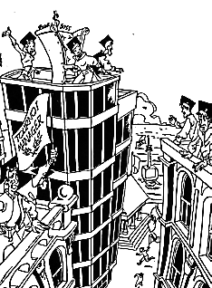

avec
KPMG - Fiduciaire de France, la BNP & Le Point

1. ESC Bordeaux
2. Arts & Métiers
3. Télécom Paris
(sur 174 équipes de Grandes Ecoles de Commerce et d'Ingénieurs)
Equipe Télécom Paris :
et
Laurent Valentin Chase Manhattan Bank